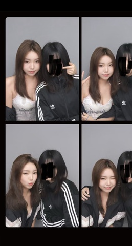

基本信息
1-page Resume (Encouraged，PDF格式，中英文均可)
Portfolio or Additional Files (Optional，PDF或视频)
请把文件名命为：first name_Last name_netid
请上传一张自己的照片，普通的生活照就可以！（只是为了面试的时候我们可以把你认出来）

查看原图
查看原图
通用问题部分
为什么想要加入CSSA？
在没来到康奈尔之前，作为高中生的我总会在朋友圈看到康奈尔学姐转发CSSA公众号推文，这在我心里埋下了小小的种子。之前在高中学生会副主席的经验让我非常享受参与学生组织，乐于与人沟通并参与活动的策划和执行。我希望在CSSA结识志同道合的好朋友们，同时也能把自己的热情带入这个大家庭。
你心目中CSSA是个什么样的组织？
参加CSSA新生见面会和CSSA的新生手册让我受益良多，避免了很多坑。我认为CSSA是一个给予中国留学生归属感的地方，也是一个具有创造力和影响力的组织。通过丰富的活动和公众号推广，CSSA让同学们能够互相支持、收获友情，同时在学业和职业方面得到帮助与启发。
加入CSSA之后，你最想在康奈尔校园内实现的事情是什么？
我们可以策划一些新活动，给无聊的康村增加一些娱乐活动，比如惯蛋大赛、德州扑克大赛。在职业发展方面，我们可以邀请校友举办小型分享会，围绕实习申请、学业规划和跨文化职场适应展开交流。
财务部
第一志愿为什么选择这个部门？
我对财务管理和数据分析有比较强的兴趣，暑假的实习让我了解到财务工作不仅需要准确性，更需要良好的沟通与协作，这与我的性格和优势非常契合。我正在学习accounting课，我也希望在实践中积累金融相关的核心技能，为未来职业道路做好准备。
外联部
之前是否有谈赞助/谈判经验？若无，请填“无”；
若有，请稍作描述。
在一次学术竞赛筹备过程中，我负责联系校内不同部门申请经费支持。通过撰写申请书并与老师当面沟通，我成功为团队争取到活动经费。
第二志愿为什么选择这个部门？
喜欢搞钱！
是否接受部门调剂？
否
Any other questions or comments?
最近没拍单人照片不好意思将就看